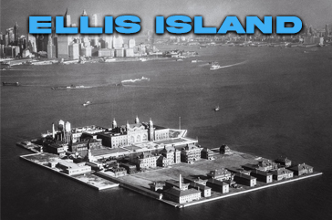
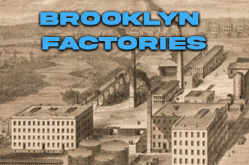

Kent City Hall Campus Digital Twin
Interactive GIS-based digital twin developed for campus management, planning, and visualization.
DIGITAL TWINS • GIS • 3D VISUALIZATION
I create Digital Twins and immersive 3D GIS applications that help organizations understand, preserve, and manage complex environments.
With over two decades of experience in mapping, spatial analysis, and 3D modeling, I specialize in creating interactive digital environments for historic preservation, government, infrastructure, and planning.
My work combines GIS, architectural modeling, web technologies, and storytelling to transform complex spatial information into intuitive visual experiences.
Interactive 3D representations of real-world environments.
Spatial analysis combined with immersive visualization.
Digital documentation and interpretation of cultural heritage.

Interactive GIS-based digital twin developed for campus management, planning, and visualization.

3D reconstruction and storytelling platform documenting historic immigration healthcare facilities.
Interactive map experience exploring Brooklyn's lost industrial landscape.
Let's create a powerful visual experience for your project.
Contact Me →